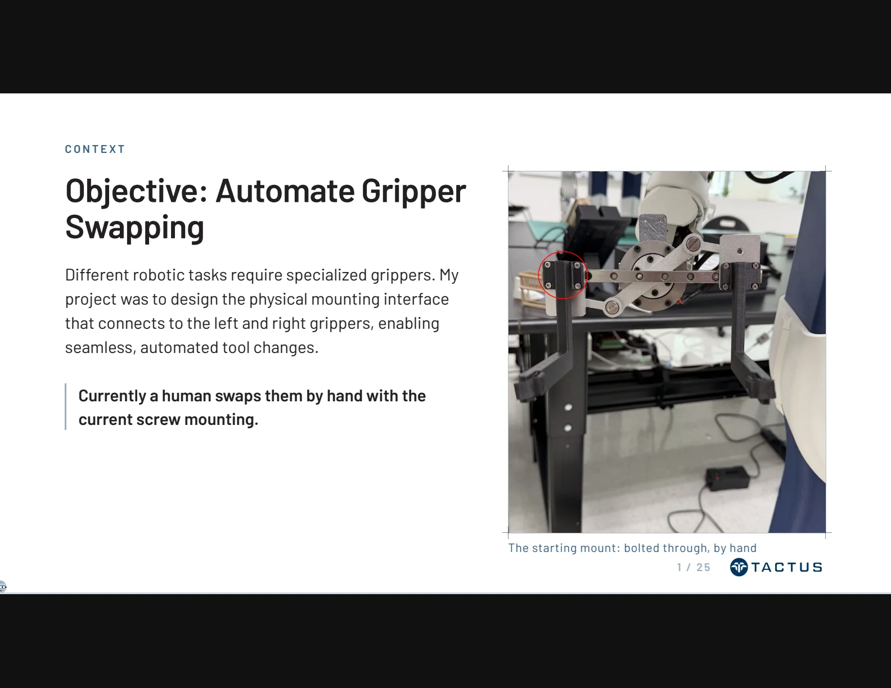
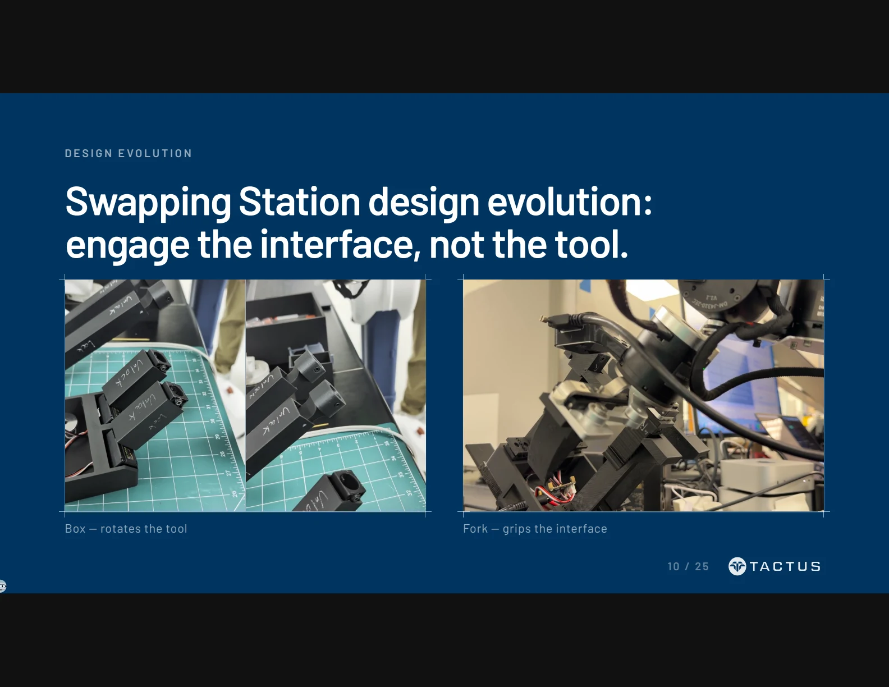
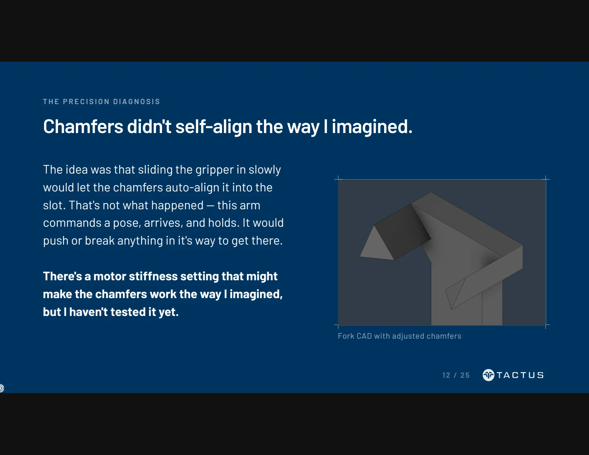

Automated Gripper Changing System
Design and prototyping of a tool changing interface and swapping station for humanoid robotic arms.
My work
I developed mechanical concepts for the gripper interface and swapping station, built and tested prototypes, and worked through fit, alignment, and clearance issues. The work combined CAD, 3D printing, hardware integration, and robot testing.
Design evolution
The presentation documents iterations of the mounting interface and station. The station shifted toward engaging the interface with forks rather than rotating the tool in a box. These slides show the design process and test setup.



Outcome and scope
The project produced prototype hardware and a handoff for continued testing. The presentation records iterations and observed tests; a fully autonomous repeated swap cycle was not validated.